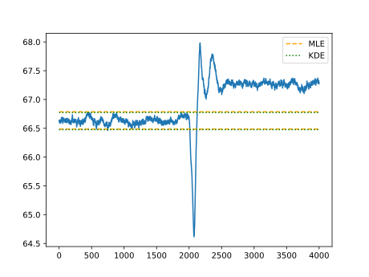
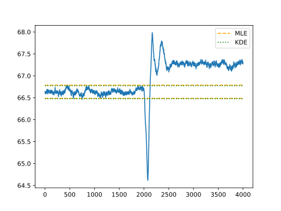

故障检测及统计
程序设计
数据导入
import csv # 用于读取 csv 文件 #
import matplotlib.pyplot as plt # 用于绘图 #
import numpy as np
# 训练 #
# 训练数据都是正常数据，应当服从某种特定的分布 #
# 导入数据 #
# 读取 csv 文件某一列的内容，返回 float 列表 #
def read_row(filename, rowno):
data = []
with open(filename) as csvfile:
csv_reader = csv.reader(csvfile)
for row in csv_reader:
data.append(row[rowno])
for i in range(len(data)):
data[i] = float(data[i])
return data
# 这里使用列下标为 17 的一维数据，即表格中 R 列的数据 #
train_data = read_row(r'.\exp1\Train_data.csv', 17)
test_data1 = read_row(r'.\exp1\Test_data1.csv', 17)
test_data2 = read_row(r'.\exp1\Test_data2.csv', 17)
train_data_p = [(i-66.2)**5*6+0.2 for i in train_data]
test_data1_p = [(i-66.2)**5*6+0.2 for i in test_data1]
# 测试集的前 2000 个数据正常，后 2000 个数据异常 #
ANS = [True]*2000+[False]*2000
函数定义
def gauss_MLE(data):
m = sum(data)/len(data)
s2 = 0
for i in data:
s2 += (i-m) ** 2
s2 /= len(train_data)
s = s2 ** 0.5
return [m + 3*s, m - 3*s]
# 对值在(0,1)间的数据作高斯窗核密度估计，输入数据、窗的标准差（宽度的1/6）、置信度和采样精度，输出置信区间（未考虑窗越界的情况）和分布 #
def gauss_KDE(data, s_window, conf, f=1000):
k = [0 for i in range(f)]
window = []
for i in range(-int(3*s_window*f), int(3*s_window*f)):
window.append(((2*np.pi)**-0.5)/s_window *
np.e**(-(i/f)**2/(2*s_window**2))/f)
# print(window)
for i in data: # 卷积计算 #
for j in range(len(window)):
k[int((i)*f)-int(3*s_window*f)+j] += window[j]
max2 = 0
min2 = 0 # 两侧 alpha 分位 #
sum_k = 0
for i in k:
sum_k += i
if sum_k < (1-conf)/2*sum(k):
min2 += 1
if sum_k < (1+conf)/2*sum(k):
max2 += 1
max2 = max2/f
min2 = min2/f
return [max2, min2, k]
# 对值在(0,1)间的数据作方窗核密度估计，输入数据、窗宽度的1/6、置信度和采样精度，输出置信区间（未考虑窗越界的情况）和分布 #
def even_KDE(data, s_window, conf, f=1000):
k = [0 for i in range(f)]
for i in data: # 卷积计算 #
for j in range(-int(3*s_window*f), int(3*s_window*f)):
k[int((i)*f)+j] += 1
max2 = 0
min2 = 0 # 两侧 alpha 分位 #
sum_k = 0
for i in k:
sum_k += i
if sum_k < (1-conf)/2*sum(k):
min2 += 1
if sum_k < (1+conf)/2*sum(k):
max2 += 1
max2 = max2/f
min2 = min2/f
return [max2, min2, k]
# 输入测试数据、置信区间上下限、测试数据的预期结果，输出真假阴阳性 #
def test(data, max, min, ans):
tn = fn = tp = fp = 0
for i in range(len(data)):
if min < data[i] < max:
if ans[i]:
tn += 1
else:
fn += 1
else:
if ans[i]:
fp += 1
else:
tp += 1
return [tn, fn, tp, fp]
# 输出测试结果文本 #
def report(ans, title='测试结果：'):
print(title)
print(f'真阳性：{ans[2]}\t假阳性：{ans[3]}')
print(f'真阴性：{ans[0]}\t假阴性：{ans[1]}')
试验过程
# 测试 1 #
print('测试 1：原始数据')
# 高斯分布的极大似然估计 #
mle1 = gauss_MLE(train_data)
print('高斯分布的极大似然估计置信度 99.7% 的区间：({},{})'
.format(round(mle1[1], 3), round(mle1[0], 3)))
ans1 = test(test_data1, mle1[0], mle1[1], ANS)
report(ans1, title='高斯分布的极大似然估计结果：')
# 高斯窗的核密度估计 #
kde1 = [i+66 for i in gauss_KDE([i-66 for i in train_data
], 0.01, 0.997, 1000)[0:2]
] + [gauss_KDE([i-66 for i in train_data], 0.01, 0.997, 1000)[2]]
print('高斯窗的核密度估计置信度 99.7% 的区间：({},{})'
.format(round(kde1[1], 3), round(kde1[0], 3)))
ans2 = test(test_data1, kde1[0], kde1[1], ANS)
report(ans2, title='高斯窗的核密度估计结果：')
# 测试 2 #
print('测试 2：不服从高斯分布的数据')
# 高斯分布的极大似然估计 #
mle2 = gauss_MLE(train_data_p)
print('高斯分布的极大似然估计置信度 99.7% 的区间：({},{})'
.format(round(mle2[1], 3), round(mle2[0], 3)))
ans3 = test(test_data1_p, mle2[0], mle2[1], ANS)
report(ans3, title='高斯分布的极大似然估计结果：')
# 高斯窗的核密度估计 #
kde2 = gauss_KDE(train_data_p, 0.01, 0.997, 1000)
print('高斯分布的极大似然估计置信度 99.7% 的区间：({},{})'
.format(round(kde2[1], 3), round(kde2[0], 3)))
ans4 = test(test_data1_p, kde2[0], kde2[1], ANS)
report(ans4, title='高斯窗的核密度估计结果：')
# 测试 3 #
print('测试 3：不同核的密度估计')
# 方窗的核密度估计 #
kde3 = [i+66 for i in even_KDE([i-66 for i in train_data
], 0.01, 0.997, 1000)[0:2]
] + [even_KDE([i-66 for i in train_data], 0.01, 0.997, 1000)[2]]
print('方窗的核密度估计置信度 99.7% 的区间：({},{})'
.format(round(kde3[1], 3), round(kde3[0], 3)))
ans5 = test(test_data1, kde3[0], kde3[1], ANS)
report(ans5, title='方窗的核密度估计结果：')
# 高斯窗的核密度估计 #
kde4 = [i+66 for i in gauss_KDE([i-66 for i in train_data
], 0.01, 0.997, 1000)[0:2]
] + [gauss_KDE([i-66 for i in train_data], 0.01, 0.997, 1000)[2]]
print('高斯窗的核密度估计置信度 99.7% 的区间：({},{})'
.format(round(kde4[1], 3), round(kde4[0], 3)))
ans6 = test(test_data1, kde4[0], kde4[1], ANS)
report(ans6, title='高斯窗的核密度估计结果：')
# 测试 4 #
print('测试 4：不同宽度的密度估计')
# 宽度 0.01 #
kde5 = [
i+66 for i in gauss_KDE([i-66 for i in train_data
], 0.01, 0.997, 1000)[0:2]]
print('高斯窗的核密度估计置信度 99.7% 的区间：({},{})'
.format(round(kde5[1], 3), round(kde5[0], 3)))
ans7 = test(test_data1, kde5[0], kde5[1], ANS)
report(ans7, title='宽为 0.01 的高斯窗的核密度估计结果：')
# 宽度 0.03 #
kde6 = [
i+66 for i in gauss_KDE([i-66 for i in train_data
], 0.03, 0.997, 1000)[0:2]]
print('高斯窗的核密度估计置信度 99.7% 的区间：({},{})'
.format(round(kde6[1], 3), round(kde6[0], 3)))
ans8 = test(test_data1, kde6[0], kde6[1], ANS)
report(ans8, title='宽为 0.03 的高斯窗的核密度估计结果：')
# 宽度 0.05 #
kde7 = [
i+66 for i in gauss_KDE([i-66 for i in train_data
], 0.05, 0.997, 1000)[0:2]]
print('高斯窗的核密度估计置信度 99.7% 的区间：({},{})'
.format(round(kde7[1], 3), round(kde7[0], 3)))
ans9 = test(test_data1, kde7[0], kde7[1], ANS)
report(ans9, title='宽为 0.05 的高斯窗的核密度估计结果：')
图像绘制
# 绘图 #
x = np.linspace(66, 66.999, 1000)
x_p = np.linspace(0, 0.999, 1000)
t = np.linspace(1, 4000, 4000)
# 实验 1 #
mle1_m = (mle1[0]+mle1[1])/2
mle1_s = (mle1[0]-mle1[1])/6
line_mle1 = [25*((2*np.pi)**-0.5)/mle1_s*np.e **
(-(i-mle1_m)**2/(2*mle1_s**2)) for i in x]
line_kde1 = [6.25*i for i in kde1[2]]
pic0 = plt.figure()
pic0 = plt.hist(train_data, bins=50)
pic0 = plt.plot(x, line_mle1)
pic0 = plt.plot(x, line_kde1)
pic0 = plt.axis([66.4, 66.9, 0, 250])
pic0 = plt.vlines(mle1[0:2], 0, 250, linestyles='--',
colors='orange', label='MLE')
pic0 = plt.vlines(kde1[0:2], 0, 250, linestyles=':',
colors='green', label='KDE')
pic0 = plt.legend(loc='best')
pic1 = plt.figure()
pic1 = plt.scatter(t, train_data)
pic1 = plt.hlines(mle1[0:2], 0, 4000, linestyles='--',
colors='orange', label='MLE')
pic1 = plt.hlines(kde1[0:2], 0, 4000, linestyles=':',
colors='green', label='KDE')
pic1 = plt.legend(loc='best')
pic2 = plt.figure()
pic2 = plt.plot(t, test_data1)
pic2 = plt.hlines(mle1[0:2], 0, 4000, linestyles='--',
colors='orange', label='MLE')
pic2 = plt.hlines(kde1[0:2], 0, 4000, linestyles=':',
colors='green', label='KDE')
pic2 = plt.legend(loc='best')
plt.show()
# 实验 2 #
mle2_m = (mle2[0]+mle2[1])/2
mle2_s = (mle2[0]-mle2[1])/6
line_mle2 = [30*((2*np.pi)**-0.5)/mle2_s*np.e **
(-(i-mle2_m)**2/(2*mle2_s**2)) for i in x_p]
line_kde2 = [7.5*i for i in kde2[2]]
pic4 = plt.figure()
pic4 = plt.hist(train_data_p, bins=50)
pic4 = plt.plot(x_p, line_mle2)
pic4 = plt.plot(x_p, line_kde2)
pic4 = plt.axis([-0.2, 0.8, 0, 300])
pic4 = plt.vlines(mle2[0:2], 0, 300, linestyles='--',
colors='orange', label='MLE')
pic4 = plt.vlines(kde2[0:2], 0, 300, linestyles=':',
colors='green', label='KDE')
pic4 = plt.legend(loc='best')
pic5 = plt.figure()
pic5 = plt.scatter(t, train_data_p)
pic5 = plt.hlines(mle2[0:2], 0, 4000, linestyles='--',
colors='orange', label='MLE')
pic5 = plt.hlines(kde2[0:2], 0, 4000, linestyles=':',
colors='green', label='KDE')
pic5 = plt.legend(loc='best')
pic6 = plt.figure()
pic6 = plt.plot(t, test_data1_p)
pic6 = plt.hlines(mle2[0:2], 0, 4000, linestyles='--',
colors='orange', label='MLE')
pic6 = plt.hlines(kde2[0:2], 0, 4000, linestyles=':',
colors='green', label='KDE')
pic6 = plt.axis([-500, 4500, -5, 15])
pic6 = plt.legend(loc='best')
plt.show()
# 实验 3 #
line_kde3 = [25/240*i for i in kde3[2]]
line_kde4 = [6.25*i for i in kde4[2]]
pic7 = plt.hist(train_data, bins=50)
pic7 = plt.plot(x, line_kde3, label='Even')
pic7 = plt.plot(x, line_kde4, label='Gauss')
pic7 = plt.axis([66.4, 66.9, 0, 250])
pic7 = plt.legend(loc='best')
pic7 = plt.vlines(kde3[0:2], 0, 300, linestyles='--',
colors='orange', label='Even')
pic7 = plt.vlines(kde4[0:2], 0, 300, linestyles=':',
colors='green', label='Gauss')
plt.show()
基本任务
 

| 控制下限 | 控制上限 | TP | FN | TN | FP | 检测率 | 误报率 | |
|---|---|---|---|---|---|---|---|---|
| 最大似然 | 66.487 | 66.786 | 1982 | 18 | 1994 | 6 | 99.10% | 0.30% |
| 方窗 | 66.474 | 66.780 | 1982 | 18 | 1997 | 3 | 99.10% | 0.15% |
| 高斯窗 | 66.477 | 66.773 | 1982 | 18 | 1993 | 7 | 99.10% | 0.35% |
| 高斯窗 | 66.461 | 66.799 | 1982 | 18 | 2000 | 0 | 99.10% | 0.00% |
| 高斯窗 | 66.429 | 66.837 | 1977 | 23 | 2000 | 0 | 98.85% | 0.00% |
| 最大似然 （变形数据） |
0.127 | 0.488 | 1942 | 58 | 1953 | 47 | 97.10% | 2.35% |
| 高斯窗 （变形数据） |
0.202 | 0.561 | 1979 | 21 | 1994 | 6 | 98.95% | 0.30% |
不服从高斯分布的样本集
| 控制下限 | 控制上限 | TP | FN | TN | FP | 检测率 | 误报率 | |
|---|---|---|---|---|---|---|---|---|
| 最大似然 | 66.487 | 66.786 | 1982 | 18 | 1994 | 6 | 99.10% | 0.30% |
| 方窗 | 66.474 | 66.780 | 1982 | 18 | 1997 | 3 | 99.10% | 0.15% |
| 高斯窗 | 66.477 | 66.773 | 1982 | 18 | 1993 | 7 | 99.10% | 0.35% |
| 高斯窗 | 66.461 | 66.799 | 1982 | 18 | 2000 | 0 | 99.10% | 0.00% |
| 高斯窗 | 66.429 | 66.837 | 1977 | 23 | 2000 | 0 | 98.85% | 0.00% |
| 最大似然 （变形数据） |
0.127 | 0.488 | 1942 | 58 | 1953 | 47 | 97.10% | 2.35% |
| 高斯窗 （变形数据） |
0.202 | 0.561 | 1979 | 21 | 1994 | 6 | 98.95% | 0.30% |
不同的核函数
| 控制下限 | 控制上限 | TP | FN | TN | FP | 检测率 | 误报率 | |
|---|---|---|---|---|---|---|---|---|
| 最大似然 | 66.487 | 66.786 | 1982 | 18 | 1994 | 6 | 99.10% | 0.30% |
| 方窗 | 66.474 | 66.780 | 1982 | 18 | 1997 | 3 | 99.10% | 0.15% |
| 高斯窗 | 66.477 | 66.773 | 1982 | 18 | 1993 | 7 | 99.10% | 0.35% |
| 高斯窗 | 66.461 | 66.799 | 1982 | 18 | 2000 | 0 | 99.10% | 0.00% |
| 高斯窗 | 66.429 | 66.837 | 1977 | 23 | 2000 | 0 | 98.85% | 0.00% |
| 最大似然 （变形数据） |
0.127 | 0.488 | 1942 | 58 | 1953 | 47 | 97.10% | 2.35% |
| 高斯窗 （变形数据） |
0.202 | 0.561 | 1979 | 21 | 1994 | 6 | 98.95% | 0.30% |
不同宽度的核函数
| 控制下限 | 控制上限 | TP | FN | TN | FP | 检测率 | 误报率 | |
|---|---|---|---|---|---|---|---|---|
| 最大似然 | 66.487 | 66.786 | 1982 | 18 | 1994 | 6 | 99.10% | 0.30% |
| 方窗 | 66.474 | 66.780 | 1982 | 18 | 1997 | 3 | 99.10% | 0.15% |
| 高斯窗 | 66.477 | 66.773 | 1982 | 18 | 1993 | 7 | 99.10% | 0.35% |
| 高斯窗 | 66.461 | 66.799 | 1982 | 18 | 2000 | 0 | 99.10% | 0.00% |
| 高斯窗 | 66.429 | 66.837 | 1977 | 23 | 2000 | 0 | 98.85% | 0.00% |
| 最大似然 （变形数据） |
0.127 | 0.488 | 1942 | 58 | 1953 | 47 | 97.10% | 2.35% |
| 高斯窗 （变形数据） |
0.202 | 0.561 | 1979 | 21 | 1994 | 6 | 98.95% | 0.30% |